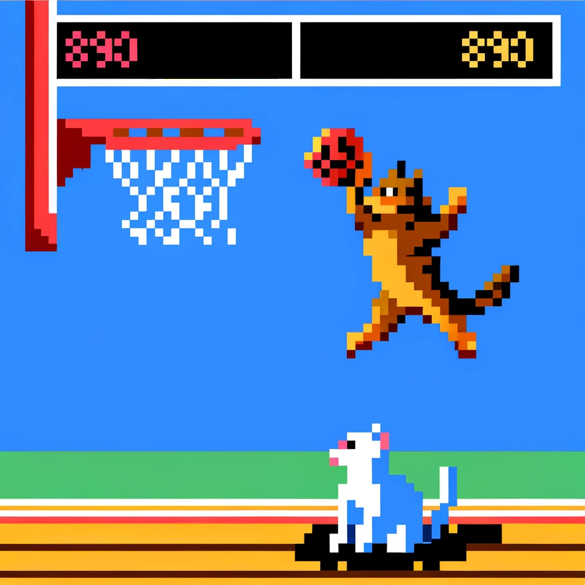

A Descent into March Madness

Intro
The NCAA Division I men’s basketball tournament, also known as March Madness (please don’t sue me NCAA) is beginning a week from now.
If you’re not familiar with the tournament, I’ll briefly explain it. 68 college basketball teams are selected by a bracket committee to play in a hectic single-elimination style tournament where there can only be one winner. It’s also a tradition for people to fill out brackets with who they think will win each of the 67 matchups that will happen within the tournament - a tough task considering millions of people attempt this challenge every year and no one has ever successfully filled out a perfect bracket.
Until now!!
Just kidding.
We’ll do our best with a basic model and see if it can outperform me, a relatively casual college basketball watcher, first.
If I could ask for one favor, please subscribe to my blog if you haven’t already. I would appreciate it and it helps me stay motivated and focused on creating high quality blog content.
Loading Data
I have always wanted to build a March Madness model, so I will be using the March Machine Learning Mania data set on Kaggle to build a predictive model and use it to fill out a bracket once the tournament seeds for 2024 are finalized. This competition has a lot of available data sets provided, including the final scores and stats of every single college basketball game since the 1984-1985 season. That’s intense, and too many fields to work with effective with just a week to go until the tournament. That’s why I’ll be keeping things basic again and starting off with a couple of predictor variables: Seed, Win Ratio, and Average Margin of Victory/Loss.
I will also be focusing more on the (hopefully very) predictive aspect and less on the interpretability of this model.
library(data.table)
library(rstan)
library(dplyr)
library(magrittr)
library(tidyr)
bb_teams <- fread("C:/Users/rober/OneDrive/Desktop/data/mm_data/MTeams.csv")
bb_seasons <- fread("C:/Users/rober/OneDrive/Desktop/data/mm_data/MSeasons.csv")
bb_data <- fread("C:/Users/rober/OneDrive/Desktop/data/mm_data/MRegularSeasonCompactResults.csv")
bb_rankings <- fread("C:/Users/rober/OneDrive/Desktop/data/mm_data/MMasseyOrdinals.csv")
bb_seeds <- fread("C:/Users/rober/OneDrive/Desktop/data/mm_data/MNCAATourneySeeds.csv")
bb_tourney <- fread("C:/Users/rober/OneDrive/Desktop/data/mm_data/MNCAATourneyCompactResults.csv")
bb_sample <- fread("C:/Users/rober/OneDrive/Desktop/data/mm_data/SampleSubmission2023.csv")Once I’ve loaded in the various data files, my strategy to set up my first few predictors will be to closely follow this Kaggle Notebook to come up with a base structure that I can improve on later.
bb_data %<>% mutate(ScoreGap = WScore - LScore)
# Number of Wins
num_win <- bb_data %>%
group_by(Season, WTeamID) %>%
summarise(NumWins = n()) %>%
rename(TeamID = WTeamID)
# Number of Losses
num_loss <- bb_data %>%
group_by(Season, LTeamID) %>%
summarise(NumLosses = n()) %>%
rename(TeamID = LTeamID)
# Average Score Gap for Wins
gap_win <- bb_data %>%
group_by(Season, WTeamID) %>%
summarise(GapWins = mean(ScoreGap, na.rm = TRUE)) %>%
rename(TeamID = WTeamID)
# Average Score Gap for Losses
gap_loss <- bb_data %>%
group_by(Season, LTeamID) %>%
summarise(GapLosses = mean(ScoreGap, na.rm = TRUE)) %>%
rename(TeamID = LTeamID)
# Features for each season
bb_features_w <-
bb_data %>%
select(Season, WTeamID) %>%
unique() %>%
rename(TeamID = WTeamID)
bb_features_l <-
bb_data %>%
select(Season, LTeamID) %>%
unique() %>%
rename(TeamID = LTeamID)
bb_features <-
bind_rows(bb_features_w, bb_features_l) %>%
distinct() %>%
arrange(Season, TeamID)
# Merge features df with num_win, num_loss, gap_win, gap_loss.
bb_features %<>%
merge(num_win, by = c("Season", "TeamID"), all.x = TRUE) %>%
merge(num_loss, by = c("Season", "TeamID"), all.x = TRUE) %>%
merge(gap_win, by = c("Season", "TeamID"), all.x = TRUE) %>%
merge(gap_loss, by = c("Season", "TeamID"), all.x = TRUE)
bb_features %<>% replace(is.na(.), 0)
bb_features %<>%
mutate(WinRatio = NumWins / (NumWins + NumLosses),
GapAvg = (NumWins * GapWins - NumLosses * GapLosses) / (NumWins + NumLosses)) %>%
select(-NumWins, -NumLosses, -GapWins, -GapLosses)In the code above I created variables called WinRatio and GapAvg using the historical regular season results for every team and every season going back to 1985. Now I will need to take the historical tournament results and merge the features we just created with that.
Historical Tournament Results
bb_tourney %<>%
merge(bb_seeds, by.x = c("Season", "WTeamID"), by.y = c("Season", "TeamID"), all.x = TRUE) %>%
rename("SeedW" = "Seed") %>%
merge(bb_seeds, by.x = c("Season", "LTeamID"), by.y = c("Season", "TeamID"), all.x = TRUE) %>%
rename("SeedL" = "Seed") %>%
mutate(SeedW = as.integer(gsub("\\D", "", SeedW)), SeedL = as.integer(gsub("\\D", "", SeedL))) %>%
merge(bb_features, by.x = c("Season", "WTeamID"), by.y = c("Season", "TeamID"), all.x = TRUE) %>%
rename("GapAvgW" = "GapAvg", "WinRatioW" = "WinRatio") %>%
merge(bb_features, by.x = c("Season", "LTeamID"), by.y = c("Season", "TeamID"), all.x = TRUE) %>%
rename("GapAvgL" = "GapAvg", "WinRatioL" = "WinRatio") %>%
select(-NumOT, -WLoc)
# Adding a reversed version of the data to itself so we have both wins and losses.
bb_1 <-
bb_tourney %>%
rename("TeamIdA" = "WTeamID",
"ScoreA" = "WScore",
"TeamIdB" = "LTeamID",
"ScoreB" = "LScore",
"SeedA" = "SeedW",
"SeedB" = "SeedL",
"WinRatioA" = "WinRatioW",
"WinRatioB" = "WinRatioL",
"GapAvgA" = "GapAvgW",
"GapAvgB" = "GapAvgL")
bb_2 <-
bb_tourney %>%
rename("TeamIdB" = "WTeamID",
"ScoreB" = "WScore",
"TeamIdA" = "LTeamID",
"ScoreA" = "LScore",
"SeedB" = "SeedW",
"SeedA" = "SeedL",
"WinRatioB" = "WinRatioW",
"WinRatioA" = "WinRatioL",
"GapAvgB" = "GapAvgW",
"GapAvgA" = "GapAvgL")
bb <- rbind(bb_1, bb_2 %>% relocate(names(bb_1)))
bb %<>% mutate(SeedDiff = SeedA - SeedB,
WinRatioDiff = WinRatioA - WinRatioB,
GapAvgDiff = GapAvgA - GapAvgB,
ScoreDiff = ScoreA - ScoreB,
WinA = as.integer(ScoreDiff > 0))
bb_train <-
bb %>%
select("SeedA", "SeedB", "WinRatioA", "WinRatioB", "GapAvgA", "GapAvgB", "SeedDiff", "WinRatioDiff", "GapAvgDiff", "WinA") %>%
mutate(across(SeedA:GapAvgDiff, scale))
rm(list = setdiff(ls(), c("bb_train", names(sessionInfo()$otherPkgs))))
gc() used (Mb) gc trigger (Mb) max used (Mb)
Ncells 1233908 65.9 2064358 110.3 2064358 110.3
Vcells 2244092 17.2 25132447 191.8 23883984 182.3Just for the heck of it, let’s create an XGBoost model. For this competition I think it might be fun to create two or three independent models, and then stack the predictions together for one final prediction.
library(xgboost)
library(pROC)
X <- as.matrix(bb_train %>% select(SeedDiff, WinRatioDiff, GapAvgDiff))
y <- bb_train$WinA
dtrain <- xgb.DMatrix(data = X, label = y)
dlog <- glm(WinA ~ SeedDiff + WinRatioDiff + GapAvgDiff, data = bb_train)
params <- list(
objective = "binary:logistic",
eta = 0.3,
max_depth = 6,
eval_metric = "logloss"
)
nrounds <- 100
m1 <- xgb.train(params = params, data = dtrain, nround = nrounds)
p1 <- predict(m1, dtrain)
p2 <- predict(dlog, bb_train)
p1_binary <- ifelse(p1 > 0.5, 1, 0)
p2_binary <- ifelse(p2 > 0.5, 1, 0)
accuracy1 <- mean(p1_binary == bb_train$WinA)
accuracy2 <- mean(p1_binary == bb_train$WinA)
print(paste0("Accuracy (XGBoost): ", accuracy1))[1] "Accuracy (XGBoost): 0.86515707874337"print(paste0("Accuracy (Logistic Regression): ", accuracy2))[1] "Accuracy (Logistic Regression): 0.86515707874337"It seems like the accuracy of the model is higher than I expected. I’ll keep the model structure how it is for now and see how the predictions turn out.
Summary
Working with sports data is difficult and tedious. It’s also very easy to introduce data leakage into a temporal model, and it’s hard to evaluate if a prediction accuracy that high is actually possible. Judging by my review of other Kaggle notebooks, it seems like training accuracy will likely be very high, and the testing accuracy will be much lower. I have one week to look over the code for bugs and improve the model though, so hopefully if there is a problem I will catch it (or if there’s data leakage it will be obvious when I don’t have the same predictors available for 2024).
I could run the same model on the 2023 Tournament Data and submit and see how it fares, because I doubt that 95% accuracy is possible.
There are also so many possible predictor variables and the variability of who wins a single basketball game is extremely high. If it was easy to model, there would have been many perfect brackets by now (and millionaire data scientists who are taking advantage of casinos with their high accuracy model.)
In this post, I started the model structure using an existing Kaggle Notebook and fit an XGBoost model to a few NCAA season team statistics like SeedDiff, WinRatioDiff, and GapAvgDiff. Before the week is over, I would like to test the model on 2023 competition and also fit one or two more models to be able to stack predictions, so consider this blog a work in progress.
Thanks for reading, and please consider subscribing.